Maestro: Javier Osorio Figueroa | Alumnos: Leo y Tommy
Introducción
Esta es página donde publicaremos documentaremos acerca de nuestro progreso en la materia de producción electronica.
Producción Electronica
¿Que hacemos en producción electronica?
La materia de producción electronica es una materia enfocada en diseñar y fabricar componentes electronicos desde cero, desde el planteamiento del proyecto hasta la fabricación de placas. Aqui abarcamos desde la elaboración de esquematicos y el diseño de placas en software como KiCad o Altium, hasta el uso de herramientas y software especializado para el corte, soldado y ensamblaje de dichas placas.
KiCad
Resumen: ¿Qué es KiCad?
KiCad es un paquete de software de código abierto para la automatización del diseño electrónico (EDA). Los programas permiten la captura de esquemas y el diseño de placas de circuito impreso (PCB) con salida en formato Gerber e IPC-2581 . El paquete funciona en Windows, Linux y macOS y está licenciado bajo la licencia GNU GPL v3 .
Fuente: https://www.kicad.org/about/kicad/Menu
Menu principal de KiCad
Al iniciar un proyecto de KiCad podemos observar en la barra lateral de KiCad los editores que tenemos disponibles, como lo es el editor de esquemas, el editor de simbolos o el editor de placas.
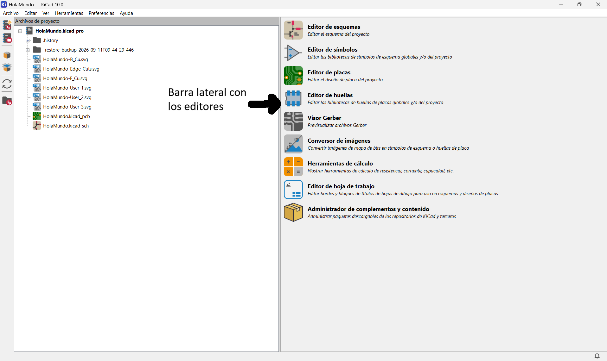
Además de eso tambien encontramos los menus usuales de "Archivo" donde podemos encontrar para abrir, guardar o clonar algun documento que tengamos; "Editar"para copiar, pegar o cortar; o "Herramientas" entre otras; como es usual encontrar en cualquier aplicación con creación de archivos.
KidCad FabLib
¿Cómo instalar KidCad FabLib?
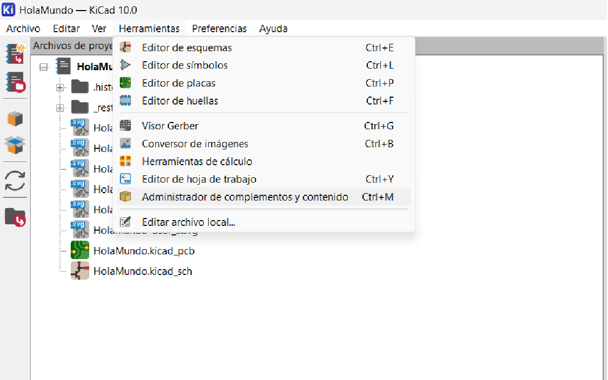
Abrimos el menu de Herramientas buscando el "Administrador de Complementos y Contenido" y lo abrimos, lo cual nos abrira un menu.
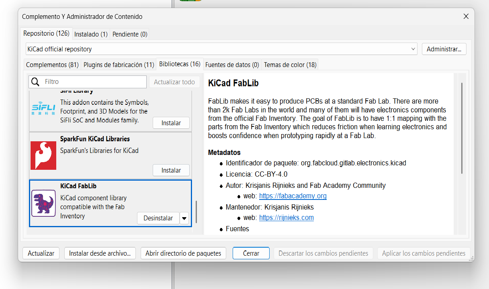
En dicho menu vamos a buscar en el filtro la libreria de "KidCd FabLib" y la instalamos. Una vez instalada vamos a reiniciar el programa para asegurarnos de poder utilizar esta libreria.
Esquemas
Editor de esquemas
Lo primero que vamos a ocupar es el editor de esquemas el cual podemos abrir desde el menu lateral en el inicio o en la barra de Herramientas en la parte superior.
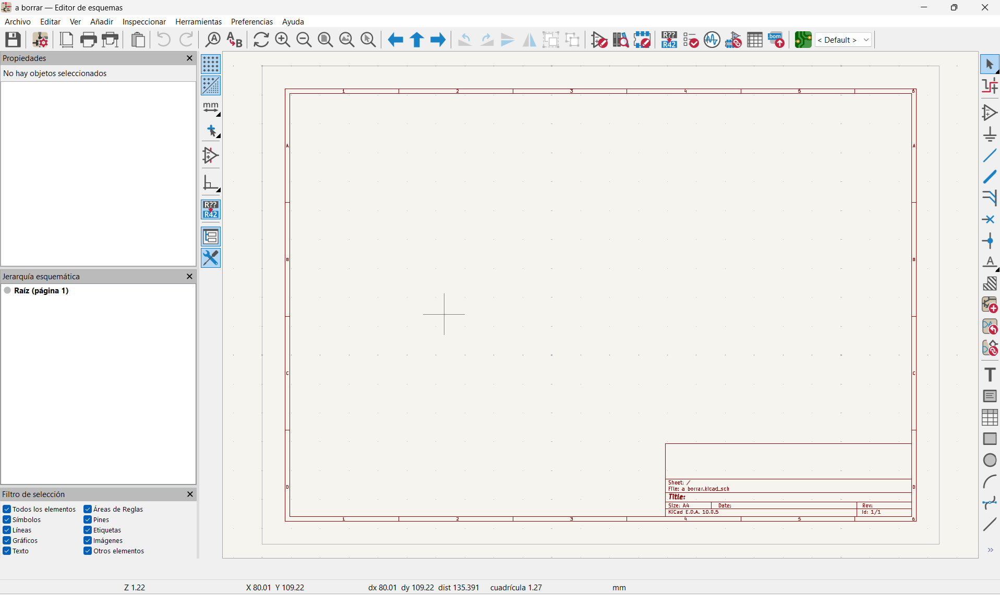
Una vez abierto nos desplegara la ventana de la anterior imagen, en donde podremos crear, editar y conectar todos nuestros diagramas para realizar un circuito.
HerramientasE
Herramientas del editor de esquemas
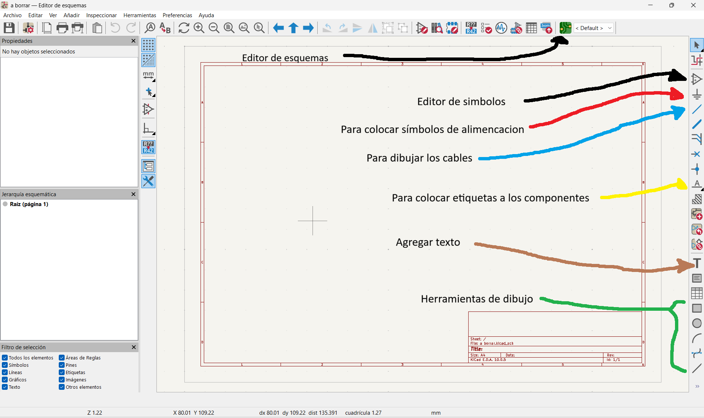
En la barra lateral dentro del editor de esquemás podemos observar diversas herramientas las cuales nos pueden ayudar a identificar e insertar los elementos necesarios para nuestro diagrama
Componentes
¿Cómo agregar un componente?
La parte más importante del editor de esquemas es para poder agregar los componentes que deseamos utilizar. Esto lo podemos hacer de dos maneras, utilizando el comando de la tecla "A" o pulsando el icono de "Colocar Simbolos" que vimos en la barra lateral del editor de esquemas en la parte anterior. Esto nos abrira la siguiente ventana:
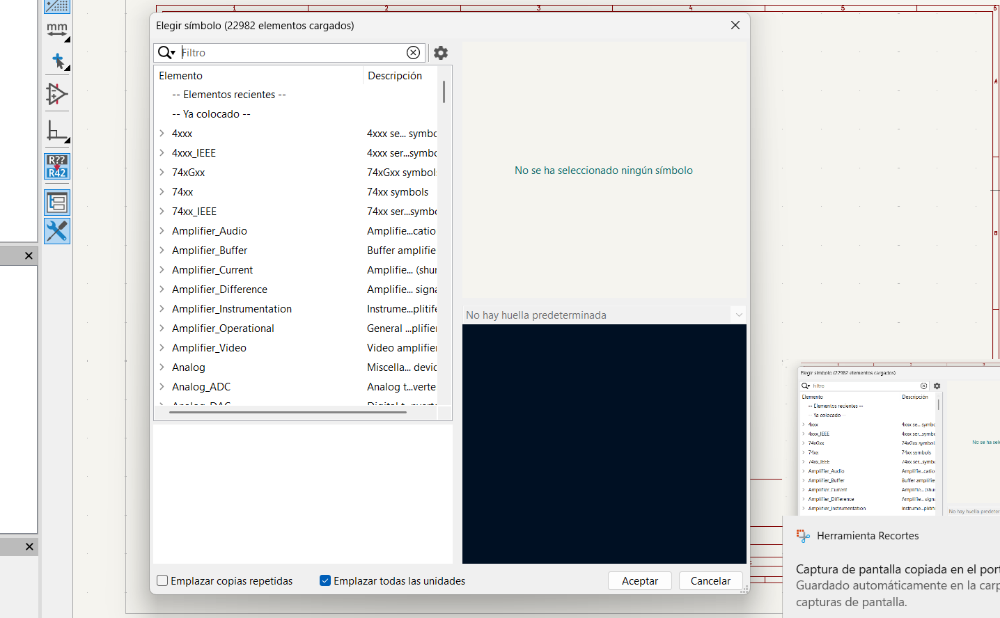
Una vez abierta esta ventana desde el filtro podremos buscar cualquier componente que deseemos insertar simplemente escribiendolo. Tambien es importante que busquemos insertar los componentes de nuestra libreria que insertamos llamada "PCM_fab"
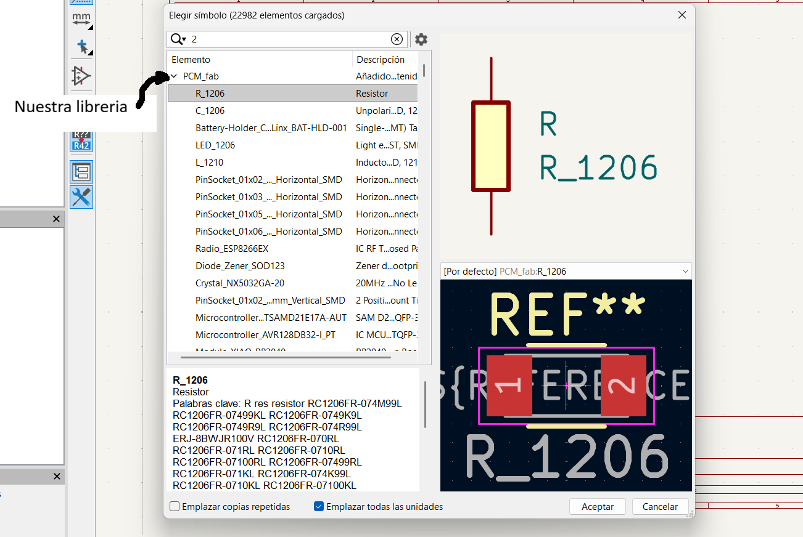
Tambien es importante que verifiquemos que el compomnente que deseemos insertar tenga un footprint ya determiando, debido a que es probable que no podamos encontrar facilmente los componentes que no posean un footprint, es lo que se ve a continuación.
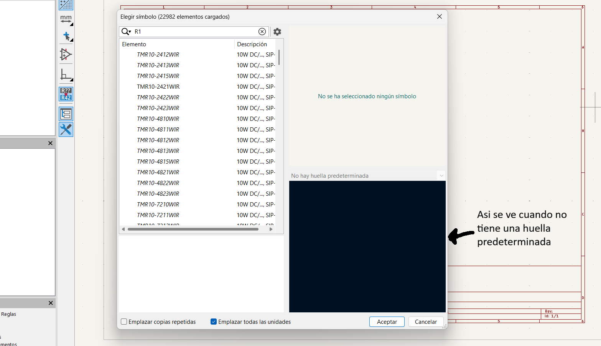
Placas
Editor de Placas
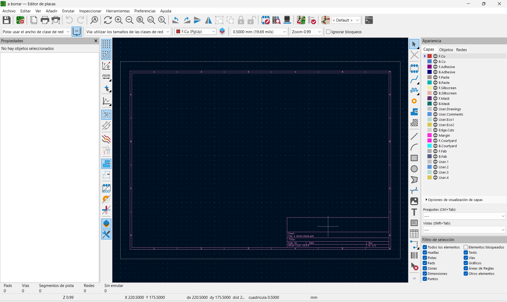
Por otro lado tenemos tambien el editor de placas el cual, al igual que el editor de esquemas, podemos abrir desde el menu lateral en el inicio o en la barra de Herramientas en la parte superior, pero a su vez tambien podemos ingresar desde el editor de esquemas al pulsar el icono señalado en la siguiente imamgen.
Componentes
¿Cómo importar los componentes del editor de esquemas?
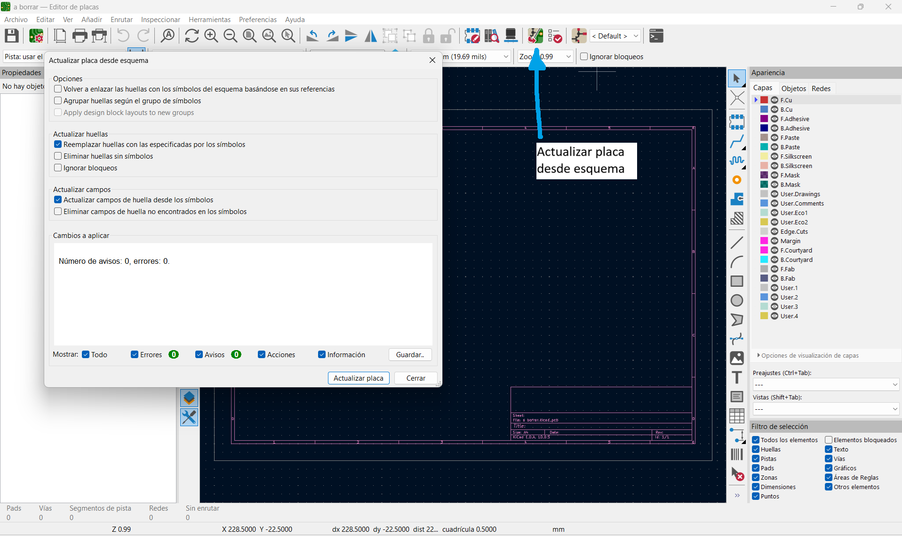
Al ya tener abierta la pestaña del editor de placas vamos a necesitar insertar los componentes del diagrama que ya creamos con anterioridad. Para esto vamos a buscar el icono de "Actualizar placa desde esquema" el cual nos va a abrir otra ventanita en la cual vamos a picar el boton de "Actualizar placa", con lo que ya tendriamos nuestros componentes inserador en esta"
HerramientasP
Herramientas del editor de placas
Una vez que tengamos nuestros componentes en el editor de placas nos vamos a encontrar en la barra lateral derecha diversas herramientas para poder diseñar nuestra placa a nuestro gusto.
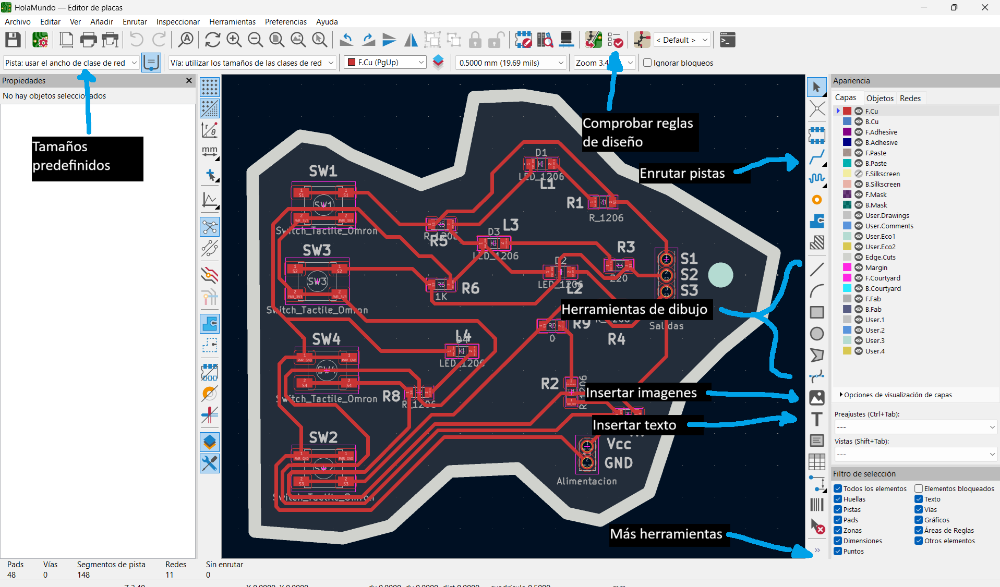
Pero tambien es importante que dependiendo de nos requisitos y limitaciones que tengamos ajustemos las reglas de diseño. Parra poder ajustar estar reglas vamos a pulsar un pequeño menu desplegable en la parte superior izquierda para despues de eso pulsar el apartado de "Editar tamaños predefinidos" lo cual nos abrira una ventana en la cual buscaremos "Requerimientos" para poder ajustar como es debido las limitaciones que poseamos.
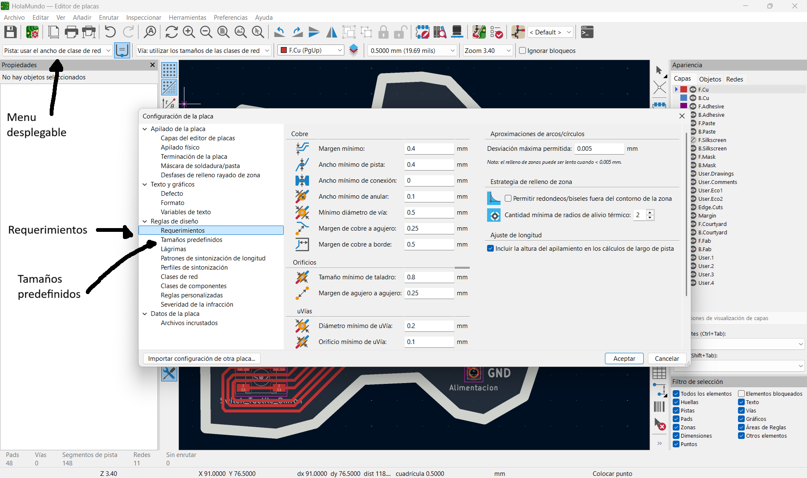
Una vez que hayamos avanzado o en su defecto concluido con nuestro diseño de placa, debemos comprobar que nuestro diseño cumpla con las reglas de diseño. Esto lo haremos desde el apartado de de "Comprobar Reglas de diseño" y posterior mente ejecutando el DRC con lo que se nos indicara si tenemos algun incumplimiento de las reglas mediante errores o avisos.
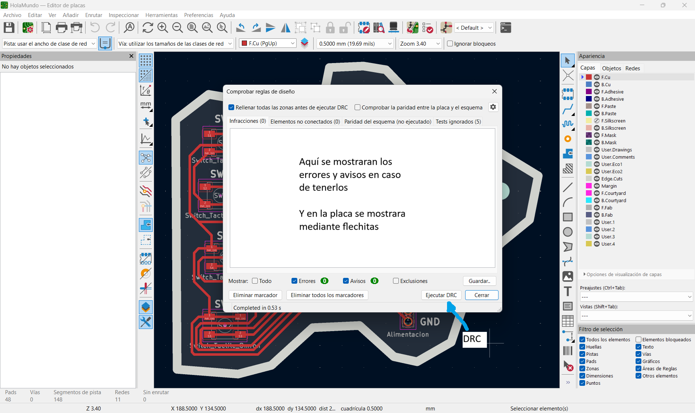
Exportar
¿Cómo exportar los archivos a gerber?
Una vez que nuestro diseño este terminado y no posea ningun error o aviso, lo que queremos es exportar los archivos para poder empezar a fabricar. Esto lo haremos desde "Archivo" y buscando "Salidas de fabricación" se nos desplegara las opciones posibles que tenemos.
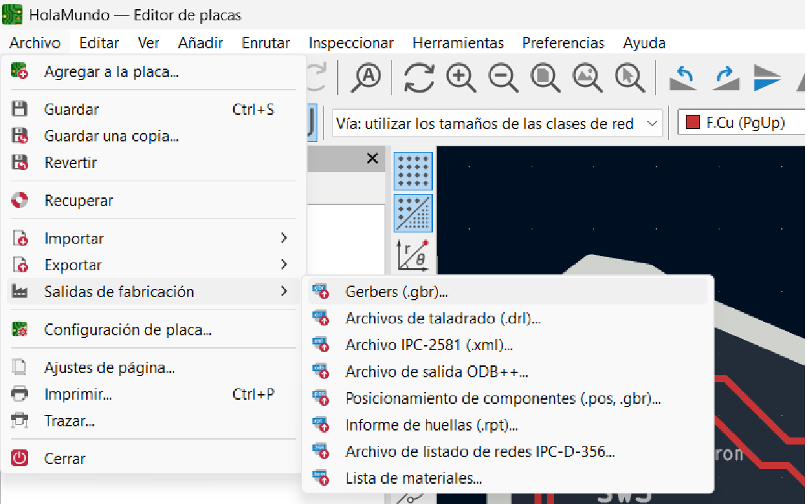
En nuestro caso pulsaremos la opción de "Gerbers" lo cual nos abrira la siguiente ventana. Y en la parte de "Formato de trazado" cambiaremos el formato a un archivo "SVG" lo cual nos cambiara el menu (Al de la segunda imagen).
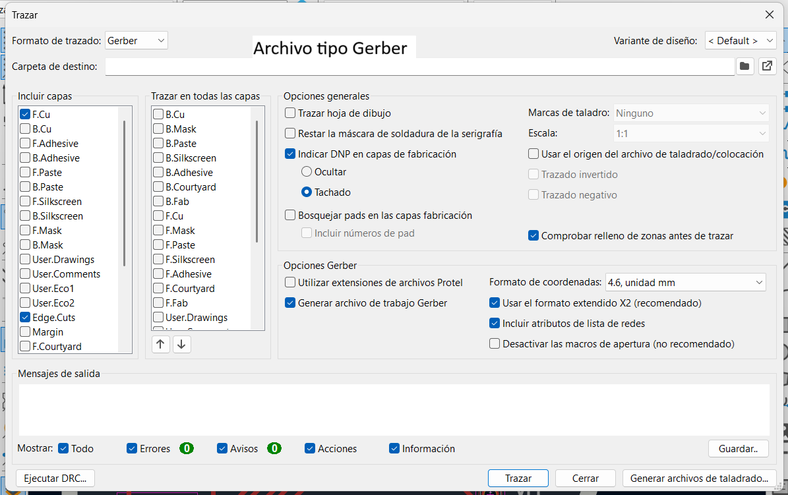
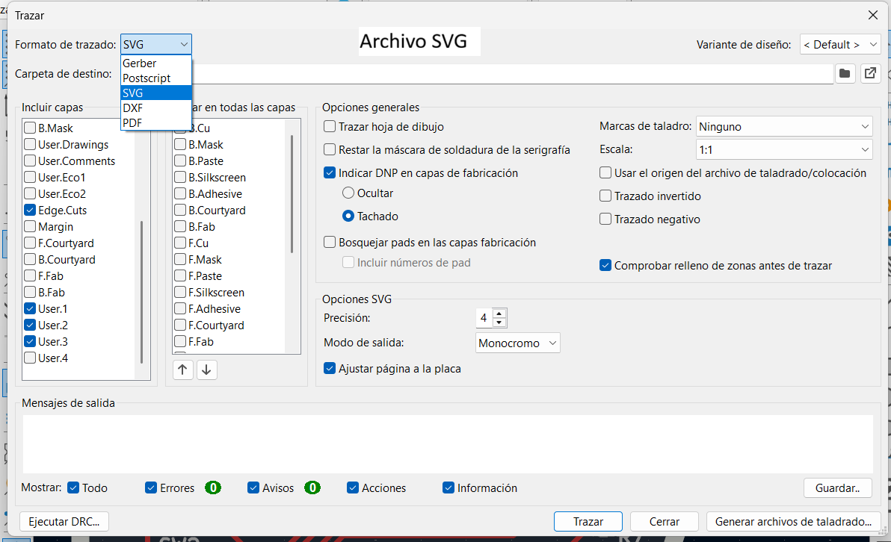
Ya en esta ventana dejaremos incluidas solamente las capas que nosotros ocupamos e incluiremos el apartado de "Ajustar pagina a la placa" para posteriormente pulsar "Trazar" lo cual nos creara los archivos para poder posteriormente configurar nuestros archivos de fabricación. NOTA: si no somos nosotros mismos los que vamos a fabricar las placas, es importante en esa misma ventana pulsar "Guardar" para poder crear un reporte el cual indicara cosas como los componentes, donde va cada uno etc.
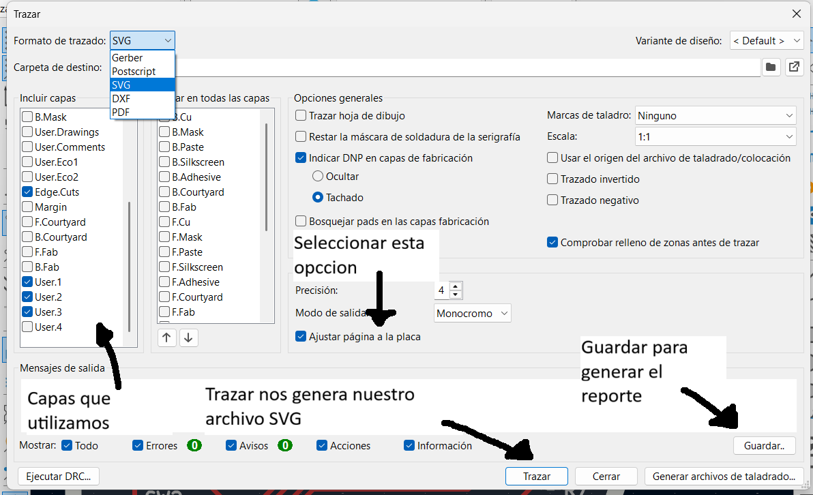
Mods
Resumen: ¿Qué es Mods CE?
Mods CE (Community Edition) es una herramienta web desarrollada para laboratorios de fabricación (FabLabs). Funciona mediante bloques interconectados y nos permite preparar proyectos de corte y grabado, calcular las rutas de las fresas y generar los archivos necesarios para máquinas CNC como la Roland SRM-20 sin complicaciones.
Para comenzar el proceso, abrimos el navegador e ingresamos a la página oficial de Mods Community Edition para cargar la zona de trabajo.
Menú
Menú de programas
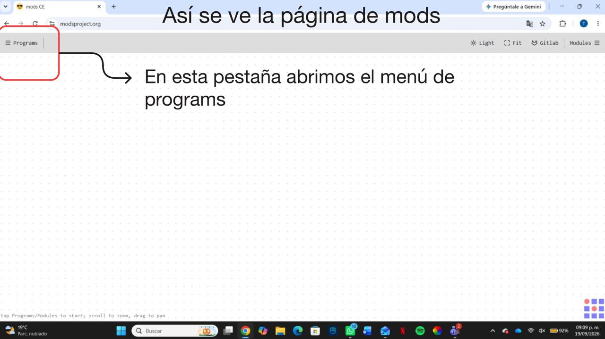
Una vez dentro de la pantalla principal, nos dirigimos a la pestaña superior para abrir la lista de configuraciones y programas disponibles en la plataforma.
Configuración
Selección del programa para la fresadora
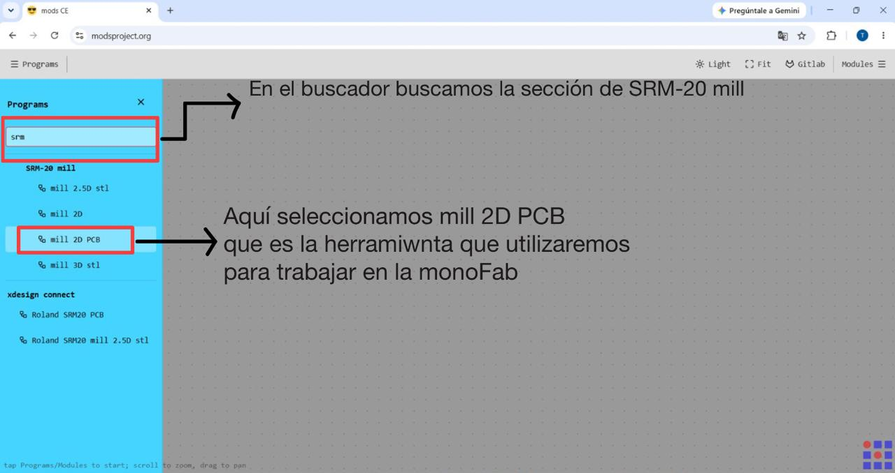
En el buscador escribimos el modelo de la máquina y elegimos la opción de fresado 2D para PCB, que es la que se adapta a nuestra Roland monoFab.
Flujo de trabajo
Módulos de trabajo conectados
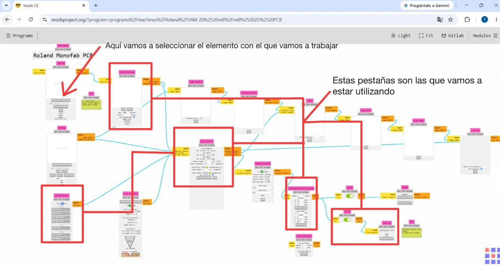
Al abrir el programa, la pantalla nos muestra un diagrama con varios bloques conectados en serie. Estos módulos nos guiarán paso a paso, desde importar el diseño hasta generar el archivo de corte.
Archivos
Cargar el archivo de contorno
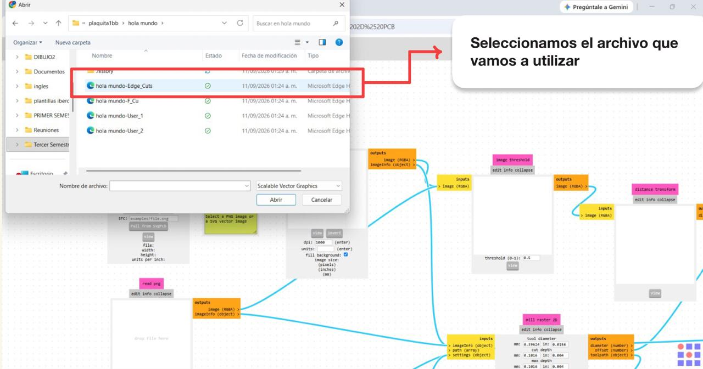
Buscamos y seleccionamos el archivo SVG con el contorno de nuestra placa (Edge Cuts), el cual exportamos previamente desde KiCad para definir la forma exterior.
Herramienta
Elección de la fresa
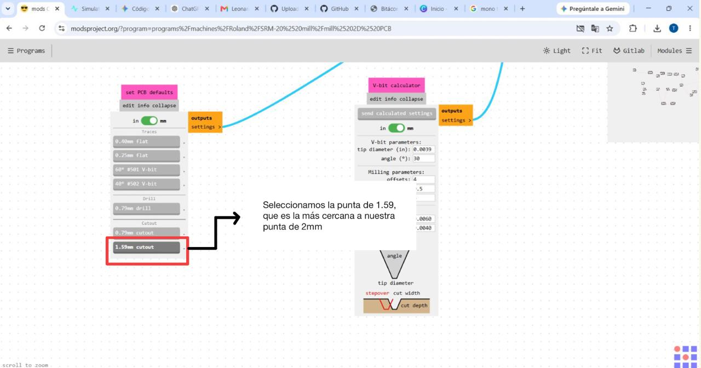
Elegimos la medida de broca que más se acerque a la que vamos a usar en la máquina física, dejando los parámetros base listos para ajustarse.
Parámetros
Ajuste de medidas y velocidad
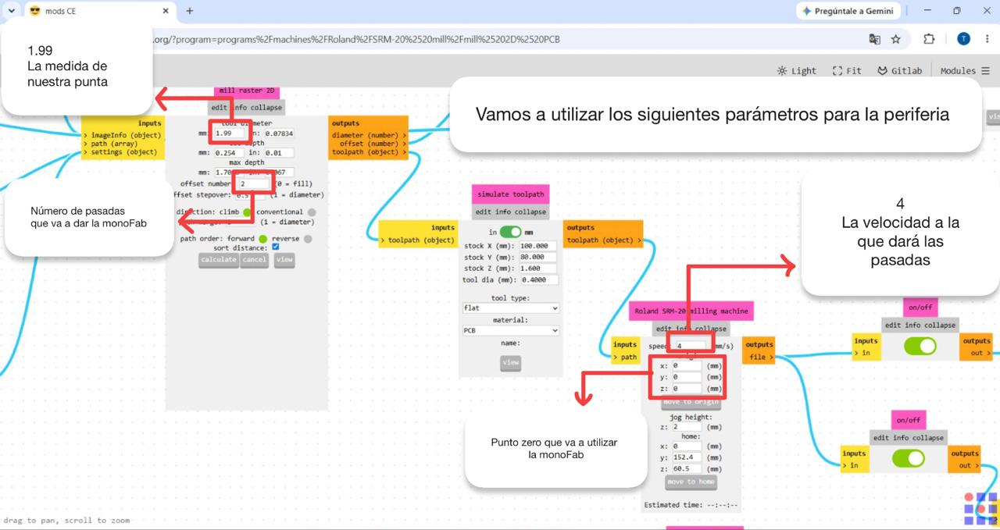
Configuramos los datos clave para el corte exterior: ingresamos el grosor real de la punta, cuántas pasadas dará la máquina, el punto de inicio (origen cero) y la velocidad de desplazamiento.
Cálculo
Calcular trayectorias y tiempo
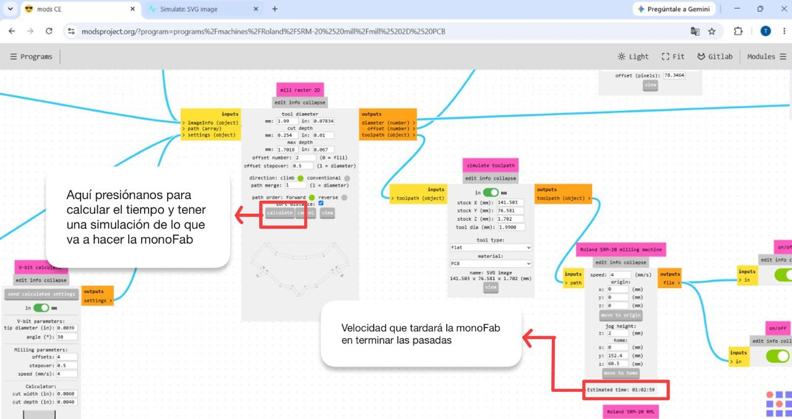
Damos clic en el botón de calcular para que el programa trace el recorrido de la fresa y nos muestre el tiempo total que tardará la máquina en terminar el trabajo.
Trayectoria
Revisión de las pasadas de corte
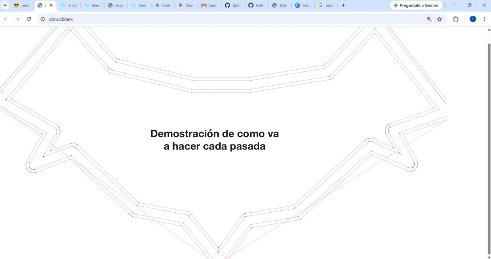
Se abrirá una vista de líneas donde podemos comprobar cómo se moverá la fresa paso a paso alrededor de la figura para no dañar el circuito[cite: 12].
Descarga
Obtener el archivo para la monoFab
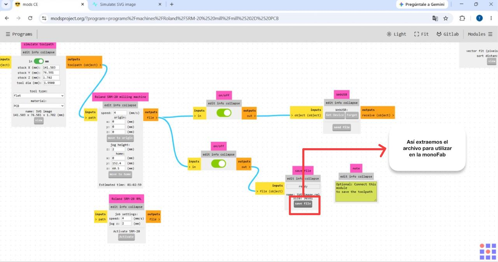
Ubicamos el bloque de guardado y descargamos el archivo final (.rml), el cual cargaremos directamente en el programa que controla la fresadora[cite: 13].
Resultado
Simulación visual en 3D
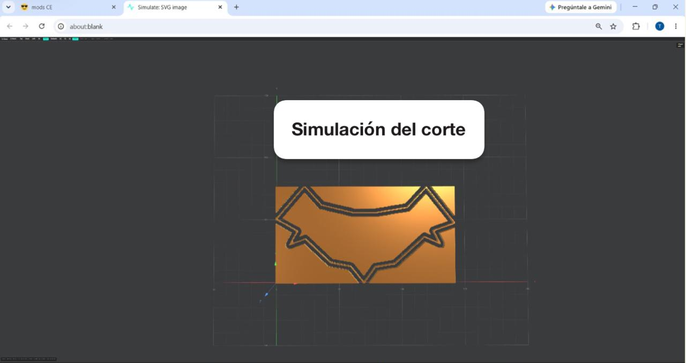
Finalmente, podemos revisar la simulación en 3D para confirmar que la pieza queda totalmente recortada y con la forma deseada antes de enviarla a fabricar[cite: 10].
Información del Estudiante
Nombre: Leonardo Barrientos Miguel
Estudiante de: Ingenieria Mecatronica, Ibero Puebla
Materia/Grupo: Produccion Electronica grupo B
Contacto: 203586@iberopuebla.mx
Información del Estudiante
Nombre: Tomas Toledo Fernandez
Estudiante de: Ingenieria Mecatronica, Ibero Puebla